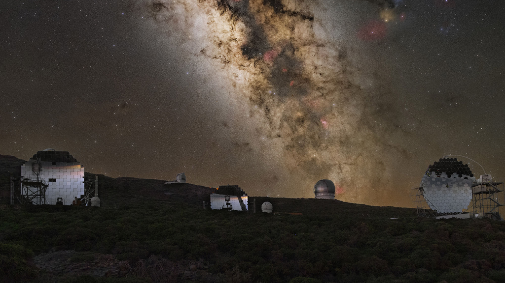
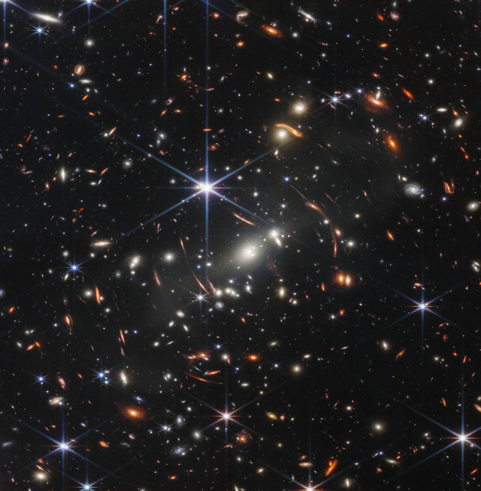

A Via Láctea
Olhar para o céu noturno é, na verdade, olhar para o espelho de nossa própria história. A Via Láctea, uma vasta espiral de estrelas, gás e poeira, é muito mais do que um rastro esbranquiçado no firmamento; é uma estrutura dinâmica com mais de 13 bilhões de anos de evolução. Composta por cerca de 200 a 400 bilhões de estrelas, nossa galáxia é uma complexa máquina cósmica onde a vida floresceu em um pequeno braço espiral.
Neste espaço, exploraremos a anatomia deste nosso lar galáctico. Vamos viajar desde o seu nascimento violento após o Big Bang, navegar pelos densos Braços de Órion e Perseus, até mergulhar nos mistérios da matéria escura — a força invisível que mantém tudo o que vemos em perfeito equilíbrio. Prepare-se para descobrir que o caos do universo possui uma ordem majestosa, e que cada átomo em nosso corpo foi forjado no coração das estrelas que compõem este gigante espiral.

Formação e Evolução: O Legado de 13 Bilhões de Anos
A Via Láctea começou a se formar há cerca de 13,6 bilhões de anos, pouco depois do Big Bang. Inicialmente, era composta por nuvens de gás e poeira que colapsaram sob a gravidade, formando as primeiras estrelas (população III).
Ao longo das eras, a nossa galáxia cresceu através de um processo chamado "canibalismo galáctico", fundindo-se com galáxias menores e absorvendo sua matéria. Esse processo moldou o disco achatado e o bojo central que vemos hoje, transformando-a em uma estrutura madura e complexa.
Mapeando os Braços: Nosso Endereço no Cosmos
Nossa galáxia é uma espiral barrada com vários braços curvos que emanam do centro. Os principais são os braços de Perseus e Escudo-Centauro, mas nós vivemos em uma estrutura menor chamada Braço de Órion (ou Espora de Órion), situada entre os braços de Sagitário e Perseus.
Estamos a cerca de 26.000 anos-luz do centro galáctico. Mapear essa estrutura é um desafio técnico, pois estamos "dentro do disco", o que exige o uso de telescópios de rádio e infravermelho (como os da missão Gaia) para enxergar através da poeira estelar.
Matéria Escura e Dinâmica: O Esqueleto Invisível
Embora vejamos bilhões de estrelas, elas representam apenas uma pequena fração da massa total da galáxia. Observações da velocidade de rotação das estrelas externas mostram que elas se movem muito mais rápido do que deveriam. Isso indica a presença da Matéria Escura, uma substância invisível que não emite luz, mas exerce uma força gravitacional colossal.
Ela forma um "halo" ao redor da Via Láctea, funcionando como a "cola" que impede que as estrelas sejam arremessadas para o espaço intergaláctico conforme a galáxia gira.
